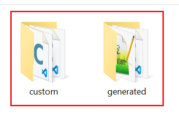

To export the source, perform the following steps:
D:\rt-thread\rt-thread\bsp\imxrt\imxrt1060-nxp-evk\packages\gui_guider_demo-latest\).
scons --target=mdk5 -s to generate/update Keil project file project.uvprojx, which is available at D:\rt-thread\rt-thread\bsp\imxrt\imxrt1060-nxp-evk.